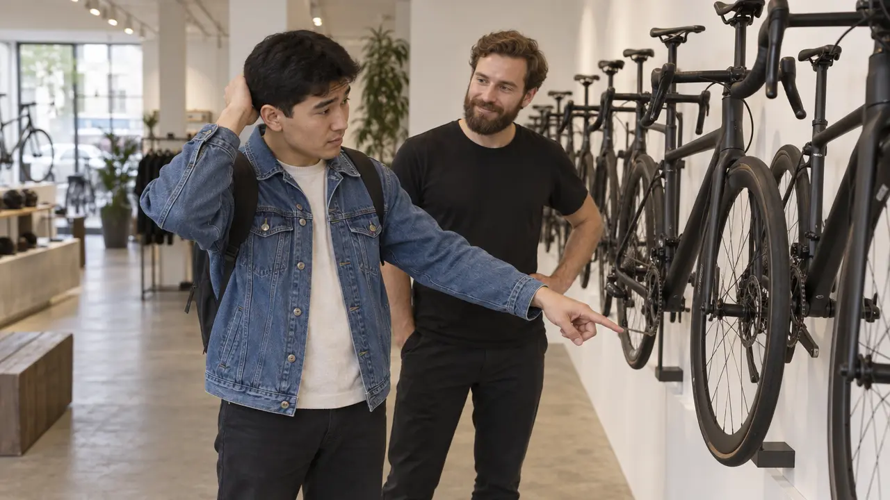
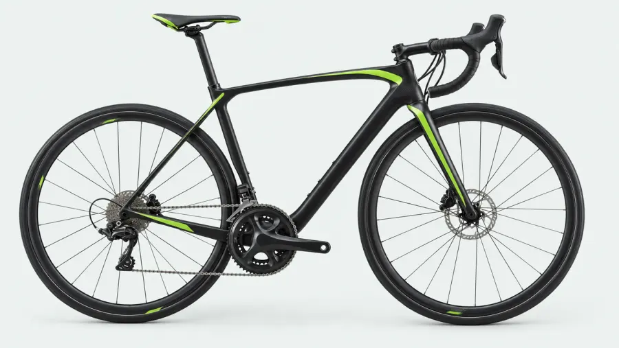

ИсторияBerlin · Fahrradladen
Das, das das

Тимур, продавец и три чёрных велосипеда↗
Помнишь Тимура? Того, который пришёл в Bürgeramt с Mietvertrag.
Тимур решил купить велосипед. В магазине на стене висели три чёрных велосипеда. Тимуру нравился средний.
Говорит, ich möchte das Fahrrad. Продавец говорит, welches? Тимур говорит, das. Продавец снимает левый.
Тимур говорит, nein. Das. Продавец снимает правый.
Тимур говорит, das Fahrrad. Schwarz. Mitte. Grün. Hier.
Продавец говорит, ah. Das Fahrrad, das in der Mitte hängt? Тимур говорит, ja. Genau. Das.
Велосипед он купил. Предложение за него построил продавец.
«Das Fahrrad, das in der Mitte hängt». Семь слов. Тимур потратил на них десять минут и немного достоинства.
Сценаdas · das · das

links×in der Mitte✓
rechts×
ТимурIch möchte das Fahrrad.Я хочу велосипед.